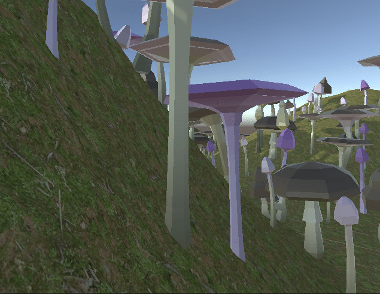

Forest Generator

The aim of this project was to create a tool that would be usable in the games industry. I decided to try and create a forest generator that would
populate an area set by the end-user with tree prefabs or in my case, mushrooms! I programmed the majority of this project in C# using the Unity
engine.
Demo Video
Below are a few videos of the tool working and the pop-up documentation that comes with it.
Planning & Development
I started off with an initial wireframe of what I wanted the interactivity and UI to look like. I wanted the trees to spawn anywhere inside an adjustable
spline so the the designer or environment artist could calve their forests around pathways and structures. It made sense to use Unity's spline package for
this project.
Throughout development I managed to spawn the trees within a rectangular boundary using the top and bottom points of the spline. I struggled however, to get them
to spawn with the concave shape of the spline itself.
This was a difficult problem and required a bit of research. A lot of results suggested to use Delaunay Triangulation to draw lines in from each point
on the spline and create a polygon that you can check that a point is in or not. While this could've worked, calculating Delaunay Triangulation is extremely
complicated and a bit overkill for use within this tool. I decided not to make use of it here but if i had it could have made my tool much more in-depth and
flexible for possible further integration.
The solution I came up with was to download two Unity utility packages, GeometryUtils and MathsUtils. GeometryUtils had a function called PointInPolygon()
which took in an Array of vectors and a single vector. This function performed the mathmatical calculation checking whether the single vector point was within
the bounds of a 2D polygon created from the X and Z values of the Array of points provided. All i needed to do now was to sample the points from the spline to get
the polygon data I needed.

My UI for this project uses a custom editor script which adds a UI Document into the Unity inspector when you select the generator object. I've styled this by
using a CSS script. The UI including selectors for adjusting the tree offset, roatation and size. There is also an option to add verticality by selecting,
"use line trace".
There is also a text field for the file path of tree prefabs to load in the forest. In said file there isn't just the prefabs there, but
scriptable objects that represent the metadata surrounding each one (mesh, spacing, frequency) . The generator needs at least one of these objects to work correctly.
Once the file path is loaded then the inspector UI will show a list of the prefabs and the relevant metadata for each (Shown above).